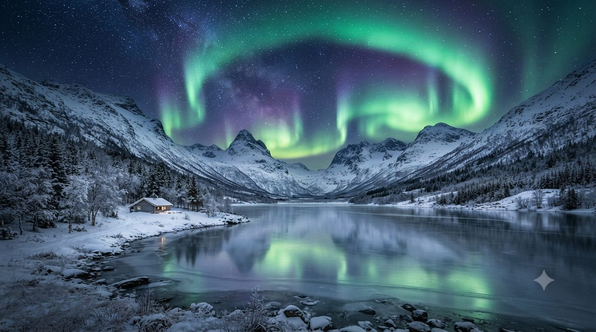

오로라

목차
- 개요
- 생기는 원리
- 색깔
- 관측
- 같이 보기
1. 개요
오로라는 극지방 하늘에 커튼처럼 흔들리며 나타나는 빛이다. 북반구에서는 북극광, 남반구에서는 남극광이라고 부른다.
2. 생기는 원리
태양에서 쏟아져 나온 전기를 띤 입자가 지구 자기장을 따라 극지방으로 모여든다. 이 입자가 높은 하늘의 공기 알갱이와 부딪히면 빛이 나는데, 이것이 오로라다.[1]
3. 색깔
가장 흔한 초록빛은 하늘 약 100에서 250킬로미터 높이의 산소가 내는 빛이다. 더 높은 곳의 산소는 붉은빛을, 질소는 보랏빛과 푸른빛을 낸다.
4. 관측
오로라는 극지방을 둥글게 감싸는 띠 모양 지역에서 자주 보인다. 노르웨이 북부, 핀란드 라플란드, 캐나다 북부, 아이슬란드가 대표적인 관측지다. 해가 일찍 지고 하늘이 맑은 겨울밤이 좋다.
태양 활동은 약 11년을 주기로 강해졌다 약해지는데, 활동이 강한 해에는 평소보다 낮은 위도에서도 오로라가 보이기도 한다.
5. 같이 보기
태양풍
지구 자기장
[1] 형광등이 빛나는 원리와 비슷하게, 빠른 입자가 기체에 에너지를 건네주면 기체가 빛을 낸다.